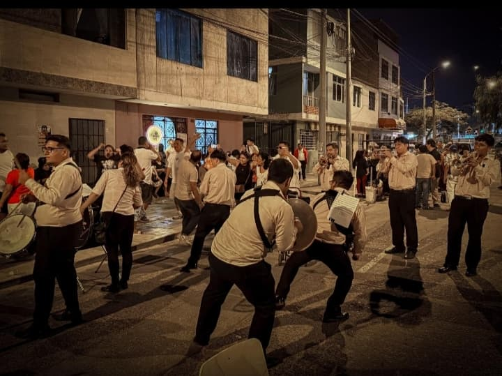
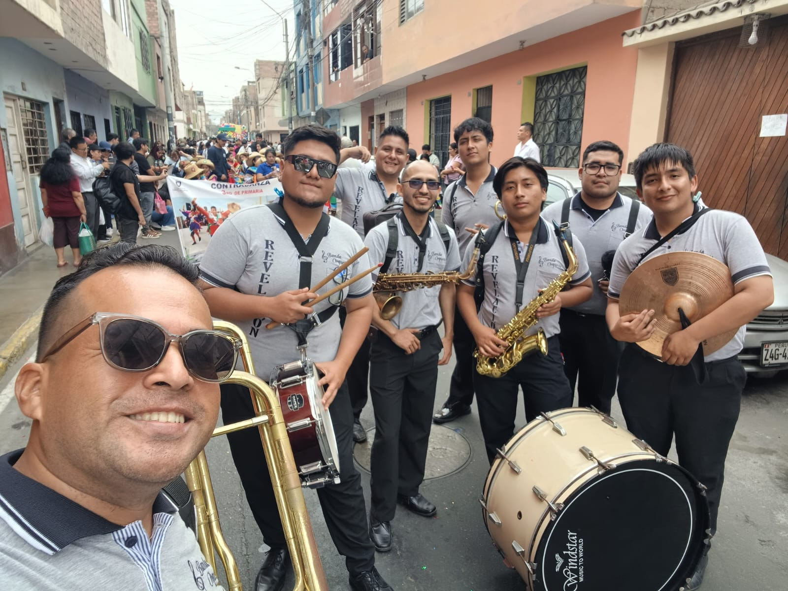

Formatos de Servicio
Revisa nuestros formatos y sus demostraciones en vivo

1. Procesional / Institucional
Marco musical solemne para marchas de fe, procesiones y actos protocolares.

2. Bailable / Patronal
Repertorio variado (cumbias, huaynos, marinera) para asegurar fiesta total.
3. Formato Íntimo (8 Músicos)
Ideal para reuniones familiares, cumpleaños o locales pequeños.

4. Pasacalles / Itinerante
Elenco móvil (6 a 8 músicos) para acompañar alegorías y marchas festivas.